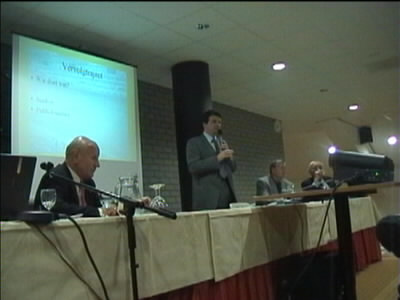

|
Overleg Z16 - Roda-bestuur (10 apr 2001) |
De participanten van Z16 komen in de sponsorruimte bijeen
voor een informatie-/overlegronde met het Roda-bestuur en
de VC. Er is lekkere koffie maar een groot gedeelte van de
harde kern zit in d'r Herjot bij iets bruisenders.
Hier werd een presentatie gegeven die begon met een film
waarin emoties van spelers en publiek het thema vormde.
Deze inleiding werd gekozen omdat het verschil in beleving
van de wedstrijden door supporters ten grondslag ligt aan de
meeste klachten die Roda krijgt over Z16.
De belangrijkste klachten op een rij. Punt een bleek het
het enige probleem dat iedereen onderkende. Een verscherpte
kaartcontrole werd vrijwel unaniem aanvaard als oplossing
voor de min of meer overtrokken klachten van mensen uit
belendende vakken.
In ansjtendig Kirchroas plat verduutsjte deze keël wie alles
besser joan mos.
Af en toe leek het alsof je in de show van Jerry Springer zat!

V.l.n.r. de laptop van Frank Rutten, Theo Pické, Marcel
Michiels, Frits de Jonge en Nol Hendriks.
Met gepaste trots maakte de aimabele Nol Hendriks melding
van een aantal voetbalnieuwtjes. Zo noemde hij de vers
gecontracteerde Collinet een groot talent en meldde hij dat
niet Ajax, maar Roda, Gregor van Dijk zal contracteren.
Vervolgens kregen we een drankje(s) aangeboden van het
huis en was er ruimschoots gelegenheid om te praten met de
bestuurslui.
©KPD